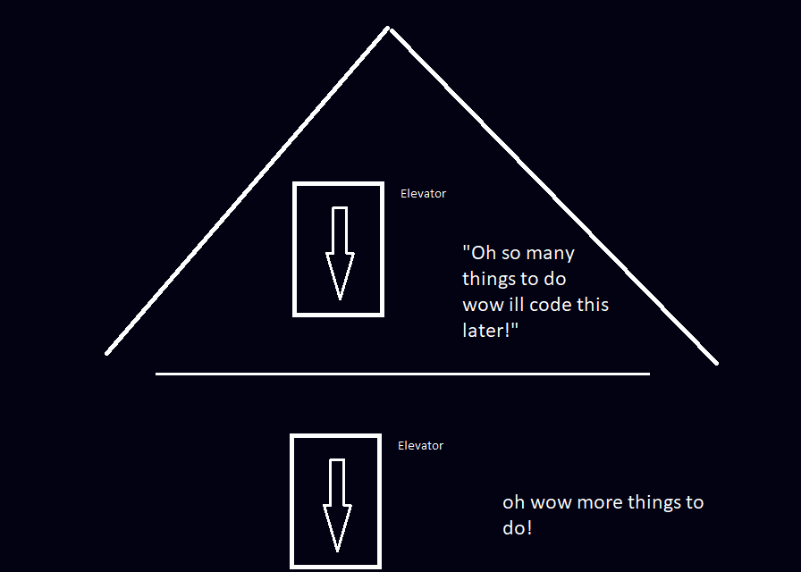
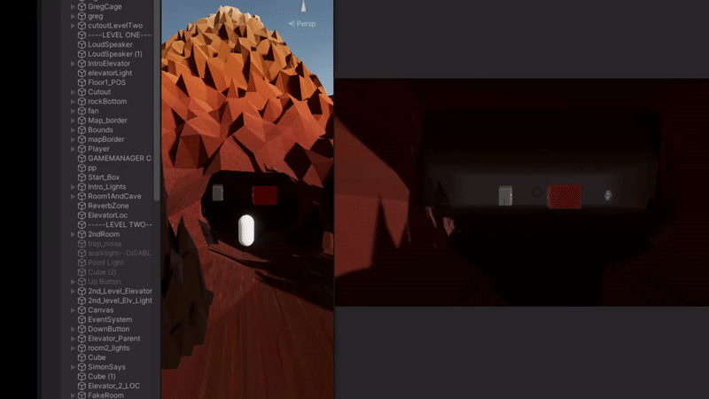
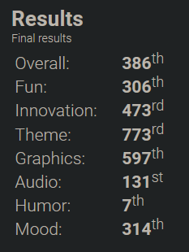
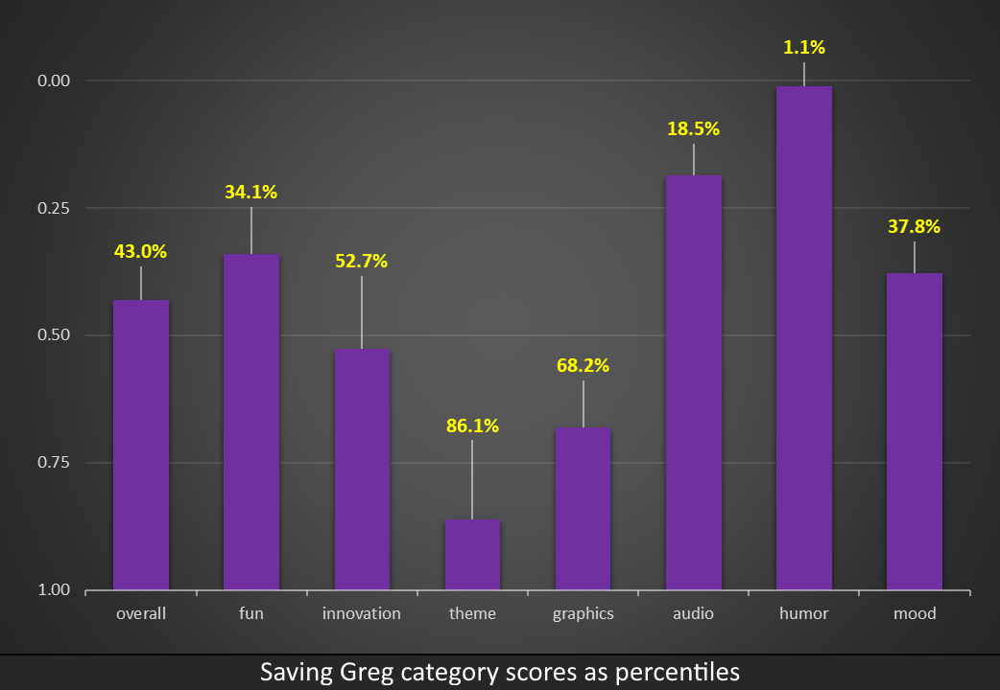

Saving Greg: A Ludum Dare 48 Post-Mortem
Saving Greg was my submission for the 48th bi-annual 48 hour game jam Ludum Dare. Here is a look back at what happened during those two days…
What Is Greg?
Greg is a phenomenon widely observed in my LD submissions. My crutch if you will. By throwing a bit of nonsensical mess into the jam at the very beginning, I find it helps me to not take this thing too seriously, and I usually end up with a patched-together game I can grow to like. This time was no different.
T-0 Ready to Blast This Baby into Hyperspace
The theme this time around was DEEPER AND DEEPER. I had many initial ideas (all not too great) and I landed on an idea I thought wasn’t too ambitious.
See, so lately I’ve been interested in the idea of escape rooms. I really like the second-person kind of talking to you personally and this mixture of realness and fantasy I find almost hilariously fun.
So no time at all passes and I think of the general idea. You’re stuck inside of this cave by some evil-doer and you have to solve puzzles to get out, all while going “deeper and deeper” into this cave.

Why Did I think this Was a Good Idea
So there are two main problems I come to realize about 24 hours into this 48 hour jam.
- A huge amount of art assets are required.
- Coding these state machines is super long and tedious.
The first problem was an oversight. It’s obvious to me now that an escape room definitely needs SOME artistic ability and time to be actually good.
The second, coding these state machines from scratch made everything too complex out the gate. Had I coded some boilerplate that was optimized for this type of game I would’ve been right as rain. However, that goes against the spirit of the jam and would’ve set me behind by a day at least.
So the majority of code in this game comes down to the little things. Make the fans spin, play animations for lights, toggle this after this and that after that.
Level 1

To get around the large number of assets I needed to make, I decided to go full homebrew and become the villain myself. Because most of the 48 hour compo games don’t have voice acting (who would embarrass themselves like that?) I voiced the narrative to save time coding a dialogue system or some text equivalent.
The first level introduces you to the game, albeit in a very cheaply thrown together way, but It came together pretty well.
I had planned to make 4 or 5 nice quality levels, and actually got pretty far in the dev process for the last 2, but ended up only making 2 additional levels.
Level 2
Level 2 is just Simon Says. That’s right. It is only simon says. I spent some time learning about Unity’s coroutines and making some nice, fun to press buttons.
I store two arrays, the correct answers and the player choices. I then evaluate both of those to see if you’re right or wrong. If you’re right, play a nice noise and start another round until max rounds is reached. If you’re wrong, play a bad noise and repeat the same order of buttons (to make it less annoyingly difficult).
|
|
To start the game, I have a coroutine that lights up the buttons on a panel and displays the order of buttons that is randomly generated. I also have a function StartSimonSays that takes an input difficulty. This generates the order of the simon says answers with a number of answers defined by our difficulty.
|
|
The lightsGoing variable allows me to stop user input from happening as the game is reading back answers.
You’ll notice some odd choices here like the prewait variable :P but it really came in handy when trial/error testing to quickly get an idea of how I wanted everything to be paced.
I avoid hard coding a lot of stuff in jams as it allows me the flexibility to add more stuff or change things around. So, adding arguments to these functions as opposed to 20 different public variables allows some simplicity. Which comes in handy when stuff doesn’t work late at night lol.

Level 3
There were two other levels planned after this but had to be scrapped so this was thrown in with a few hours left in the jam.
After coming to terms with the fact that two other levels weren’t making it in, I still wanted some third level just so I could say that, technically, there are three levels!
You just walk around the level after the villain demands you find his key, all while the find the key song is playing.
Find the Key Song:
Wrapping it Up & Ratings
I had a lot of fun making the game as you can probably tell. This time around I placed 7th out of 898 entries in humor while placing around the middle of the pack for overall and other categories.


Again, I think I attempted to do too much here, I think the main struggle was wrapping my head around Unity coroutines, which took up a lot of my time. If I were to do it over again I’d probably practice some state machines in Unity first.
However, I got my first top 10 in a category which I’m pretty proud of!
You can download and play the game at https://lferg.itch.io/saving-greg. Some people compared the gameplay to The Stanley Parable, which was super awesome to hear! This was my first time doing any sort of voice acting for my games and I’m so glad so many people played and shared their experience.
I’m not sure if I’ll ever revisit this, but I’d definitely like to create a similar game in the future. Thanks for reading!